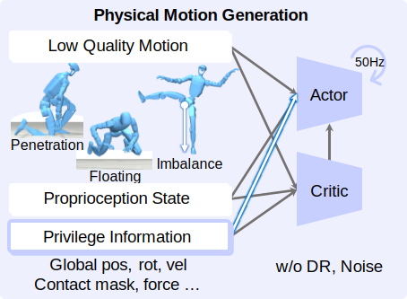

Hover to flip
Physical Motion Generation
This module learns a privileged generalist policy in simulation to transform noisy, artifact-heavy references into physically plausible motions.
It enforces robot dynamics consistency and produces stable intermediate motion commands for downstream tracking.